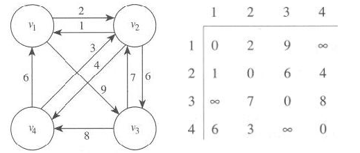

[강의정리] 알고리즘 W6 (Dynamic Programming)
Dynamic programming
- Similar to divide-and-conquer
- small instances first, store the results, whenever we need a result, look it up instead of recomputing it.
알고리즘: Using Divide-and-Conquer
- 문제: 이항계수를 계산한다
- 입력: 음수가 아닌 정수 n과 k, 여기서 k <= n
- 출력: bin, [n k]
1 | int bin(int n, int k) { |
시간복잡도 분석:
- 분할정복 알고리즘은 작성하기는 간단하지만, 효율적이지 않음
- 이유? 재귀호출(recursive call)할때 같은 계산을 반복해서 수행하기 때문
- 예를 들면, bin(n-1, k-1)과 bin(n-1, k)는 둘다 bin(n-2, k-1)의 결과가 필요한데, 따로 중복 계산이 됨
[n: k]를 구하기 위해서 이 알고리즘이 계산하는 항(term)의 개수는 2[n: k]-1이다. (증명을 해보자)
증명: (n에 대한 수학적 귀납법으로 증명)
- 귀납출발점: 항의 개수 n이 1일 때 2[n: k]-1 = 2 x 1 - 1 = 1이 됨을 보이면 된다.
[1: k]는 k=0이나 1일때 1이므로 항의 개수는 항상 1이다. - 귀납가정: [n: k]를 계산하기 위한 항의 개수는 2[n: k] - 1이라고 가정한다.
- 귀납절차: [n+1: k]를 계산하기 위한 항의 개수가 2[n+1: k] - 1임을 보이면 된다.
알고리즘에 의해서 [n+1: k] = [n: k-1] + [n: k] 이므로, [n+1: k]를 계산하기 위한 항의 총 개수는 [n: k-1]을 계산하기 위한 총 개수와 [n: k]를 계산하기 위한 항의 총 개수에다가 이 둘을 더하기 위한 항 1을 더한 수가 된다. 그런데 [n: k-1]을 계산하기 위한 항의 개수는 가정에 의해서 2[n: k-1] -1이고, [n: k]를 계산하기 위한 항의 개수는 가정에 의해서 2[n: k] - 1이다.
동적계획식 알고리즘 설계전략
- Establish a recursive property (재귀 관계식을 정립):
- 2차원 배열 B를 만들고, 각 B[i][j]에는 [i: j]값을 저장하도록 하면, 그 값은 다음과 같은 관계식으로 계산할 수 있다.

- Solve an instance of the problem in a bottom-up fashion:
- [n: k]를 구하기 위해서는 다음과 같이 B[0][0]부터 시작하여 위에서 아래로 재귀 관계식을 적용하여 배열을 채워 나가면 된다.
결국 값은 B[n][k]에 저장된다.
- [n: k]를 구하기 위해서는 다음과 같이 B[0][0]부터 시작하여 위에서 아래로 재귀 관계식을 적용하여 배열을 채워 나가면 된다.
- 문제: 이항계수를 계산한다.
- 입력: 음수가 아닌 정수 n 과 k, 여기서 k <= n
- 출력: bin, [n: k]
1 | int bin2(int n, int k) { |
동적계획 알고리즘의 분석
단위연산: for-j 루프 안의 문장
입력의 크기: n, k
i = 0일 때 j-루프 수행 횟수 : 1
i = 1일 때 j-루프 수행 횟수 : 2
i = 2일 때 j-루프 수행 횟수 : 3
……………
i = k-1일 때 j-루프 수행 횟수 : k
i = k일 때 j-루프 수행 횟수 : k + 1
i = k+1일 때 j-루프 수행 횟수 : k + 1
……………
i = n일 때 j-루프 수행 횟수 : k + 1따라서 총 수행횟수는:
1 + 2 + 3 + … + k + (k+1) + … + (k+1) = k(k+1)/2 + (n-k+1)(k+1) = (2n-k+2)(k+1)/2 = O(nk)
그래프
그래프 용어
- 정점(vertex, node), 이음선(edge, arc)
- 방향 그래프(directed graph, or digraph)
- 가중치(weight), 가중치 포함 그래프 (weighted graph)
- 경로(path) - 두 정점사이에 edge가 있는 정점들의 나열
- 단순경로(simple path) - 같은 정점을 두 번 지나지 않음
- 순환(cycle) - 한 정점에서 다시 그 정점으로 돌아오는 경로
- 순환그래프(cyclic graph) vs 비순환 그래프 (acyclic graph)
- 길이(length): the sum of weights on the path (weighted graph)
the number of edges on the path (unweighted graph)
Shortest Path
Shortest Path: 한 도시에서 다른 도시로 직항로가 없는 경우
가장 빨리 갈 수 있는 항로를 찾는 문제문제: 가중치 포함, 방향성 그래프에서 최단경로 찾기
Optimization problem (최적화 문제)의 정의
- 주어진 문제에 대하여 하나 이상의 많은 해답 후보가 존재할 때, 이와 연관된 값이 최소 또는 최대인 해답(optimal solution)을 찾아야 하는 문제
- 에너지 최소화 문제라고도 함.
shortest Path는 Optimization problem에 속함
Brute-force algorithm(무작정 알고리즘)
- 한 정점에서 다른 정점으로의 모든 경로의 길이를 구한 뒤, 그들 중에서 최소길이를 찾는다.
동적계획식 설계전략 - 자료구조
- 그래프의 인접행렬(adjacent matrix)식 표현: W
동적계획식 설계절차
Establish a recursive property
- D(k-1)을 가지고 D(k)를 계산할 수 있는 재귀 관계식을 정립
- D(k)[i][j] = minimum(D(k-1)[i][j], D(k-1)[i][k] + D(k-1)[k][j])
- 경우 1: {v1, v2,…, vk}의 정점들 만을 통해서 vi에서 vj로 가는 최단 경로가 vk를 거치지 않는 경우,
보기: D(5)[1][3] = D(4)[1][3] = 3 - 경우 2: {v1, v2,…, vk}의 정점들 만을 통해서 vi에서 vj로 가는 최단 경로가 vk를 거치는 경우,
보기: D(2)[5][3] = D(1)[5][2] + D(1)[2][3] = 4 + 3 = 7 보기: D(2)[5][4]
- D(k-1)을 가지고 D(k)를 계산할 수 있는 재귀 관계식을 정립
상향식으로 k=1부터 n까지 다음과 같이 이 과정을 반복하여 해를 구한다.
D(0), D(1),……,D(n)
Floyd’s Algorithm I
- 가중치 포함 그래프의 각 정점에서 다른 모든 정점까지의 최단거리를 계산
1 | void floyd(int n, const number W[][], number D[][]) { |
Floyd’s Algorithm II
- 가중치 포함 그래프의 각 정점에서 다른 모든 정점까지의 최단거리를 계산, 각각의 최단경로를 구하라.
1 | void floyd2(int n, const number W[][], number D[][], index P[][]) { |
최단경로의 출력
1 | void path(index q,r) { |
최적의 원칙
- 어떤문제의 입력에 대한 최적해가 그 입력을 나누어 쪼갠 여러 부분에 대한 최적 해를 항상 포함하고 있으면 그 문제는 최적의 원칙(the principle of optimality)이 적용된다 라고 한다.
Optimal Binary Search Trees
- definition
- binary search tree
- Ordered set
- Each node contain one key
- The keys in the left subtree are less than or equal to the key in that tree
- Depth - number of edges from the root
- balanced - if the depth of the 2 subtrees of every node never different by more than 1
- optimal - the average time it takes to locate a key is minimized
- binary search tree
1 | void optsearchtree(int n, const float p[], float& minavg, index R[][]) { |
The Traveling Salesperson Problem
Problem Definition
- Determine a shortest route that starts at the salesperson’s home city, visits each of the cities once, and ends up at the home city
Adjacent matrix W
- V = set of all the vertices
- A = a subset of V
- D[vi][A] = length of a shortest path from vi to v1
passing through each vertex in A exactly once
Length of an optimal tour = minimum(W[1][j] + D[vj][V - {v1, vj}])
```C
void travel(int n, const number W[][], index P[][], number& minlength) {
index i, j, k;
number D[1..n][subset of V-{v1}];
for(i=2; i<=n; i++)
D[i][0] = W[i][1];
for(k=1; k<=n-2; k++)
for(all subsets A V-{v1} containing k vertices)
for(i such that i!= 1 and vi is not in A) {
D[i][A] = min(j:vj A)(W[i][j]+D[j][A-{vj}]);
P[i][A] = value of j that gave the minimum;
}
D[1][V-{v1}] = min(2<=j<=n)(W[1][j] + D[j][A-{v1,vj}]);
P[1][V-{v1}] = value of j that gave the minimum;
minlength = D[1][V-{v1}]
}